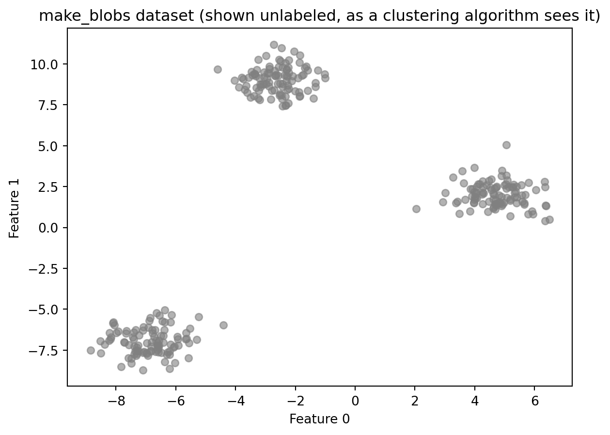
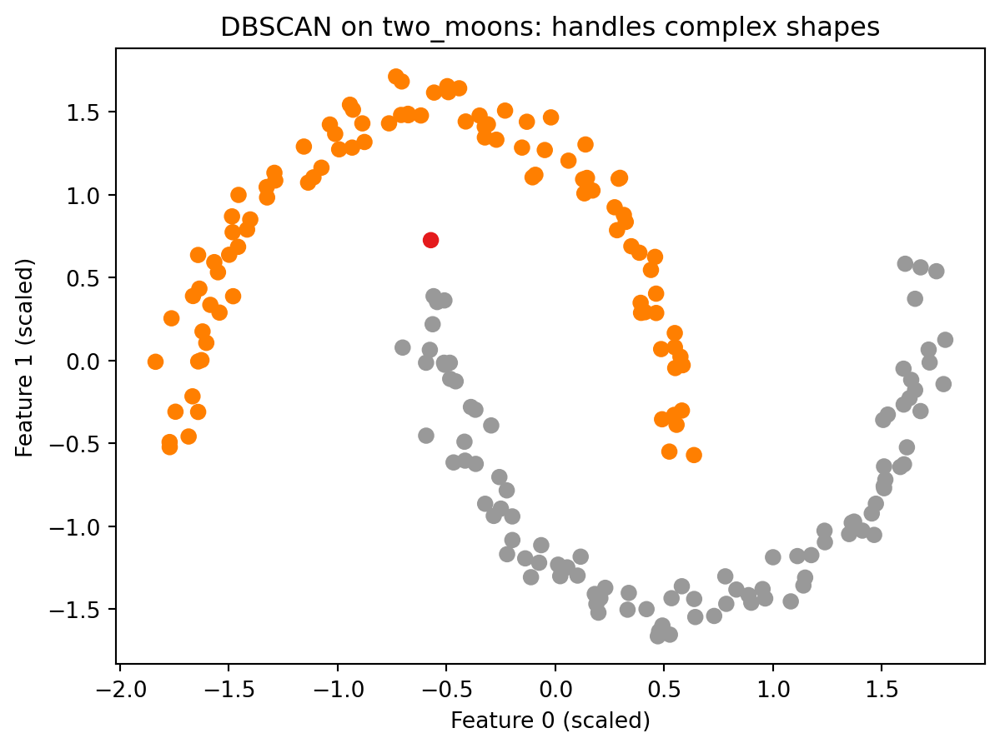

Weeks 10 through 13 covered two kinds of unsupervised preprocessing. Week 10 introduced scaling, which adjusts the numeric range of features so that no single feature dominates distance calculations because of the scale it was measured at. Week 12 introduced dimensionality reduction, which finds a compact representation of your data by identifying the directions where most of the variation lives and discarding the directions that contribute mostly noise. Both of those techniques prepare your data before doing something else with it.
This week introduces a different kind of unsupervised learning: clustering. Where preprocessing transforms your data, clustering analyzes it. The goal is to find groups of similar data points without any labels to guide the search.
What is clustering?
In supervised learning, every training sample has a label. The algorithm uses those labels to learn what distinguishes one class from another. Every week from Week 2 through Week 8, the workflow started the same way: you had a target column y, you split your data, you trained a model to predict that target, and you evaluated it by comparing predictions to known answers. The known answers were what made evaluation possible.
Clustering is different. Imagine handing someone a stack of unlabeled photographs and asking them to sort the photos into groups without telling them what the groups should be. They would look for similarities: photos taken outdoors, photos with people, photos with food. Clustering does the same thing with numeric data. The algorithm receives only X and groups points based on how similar their feature values are, without any label defining what similar should mean.
Clustering is the task of partitioning a dataset into groups, called clusters, so that points within a cluster are more similar to each other than they are to points in other clusters. At the end of clustering, each data point is assigned a number indicating which cluster it belongs to. This looks like classification, but there is a critical difference: the cluster numbers are arbitrary. Cluster 0 and Cluster 1 are just labels the algorithm invented. The only meaningful information is which points ended up together.
This means clustering results cannot be evaluated the way a classifier can. There is no accuracy score to compute against ground truth labels. Evaluation in clustering is a more qualitative process, and understanding its limitations is part of learning to use these algorithms correctly.
How clustering differs from supervised learning
Aspect
Supervised (Classification)
Clustering
Labels
Required for training
Not used
Goal
Predict labels for new data
Find natural groups in data
Evaluation
Accuracy against known labels
Qualitative or internal metrics
Output
Class prediction
Cluster assignment
Cluster meaning
Defined by label
Discovered from data
The three algorithms this demo covers
This demo introduces three clustering algorithms from the textbook. Each takes a different approach to finding groups in data.
k-Means is the most widely used clustering algorithm. It finds a specified number of clusters by placing cluster centers in the data and assigning each point to the nearest center. You must tell it how many clusters to look for.
Agglomerative Clustering is a hierarchical approach. It starts with every point as its own cluster and repeatedly merges the two most similar clusters until the desired number remains. It builds structure from the bottom up rather than placing centers from the outside in.
DBSCAN (Density-Based Spatial Clustering of Applications with Noise) identifies clusters as dense regions of points separated by sparser regions. It does not require you to specify the number of clusters in advance, and it can identify individual points that do not belong to any cluster at all. Those points are labeled as noise.
What this demo covers
This demo covers:
What clustering is and how it differs from supervised learning
KMeans from sklearn.cluster: the fit workflow, labels_, cluster_centers_, and predict
k-Means failure cases: what happens when the number of clusters is wrong and when the data has complex shapes
AgglomerativeClustering from sklearn.cluster: the fit_predict workflow and the ward linkage criterion
DBSCAN from sklearn.cluster: core points, boundary points, noise points, and the eps and min_samples parameters
The silhouette score from sklearn.metrics: what it measures and, critically, where it misleads you
The textbook then expands on each algorithm with additional failure cases, real-world applications to a face image dataset, dendrograms for visualizing agglomerative clustering, and a comparison of the silhouette score against the adjusted rand index (ARI).
Part 1: The Dataset
This demo uses synthetic data generated by make_blobs from sklearn.datasets. make_blobs creates a dataset designed for clustering demonstrations. It works by deciding how many groups to create, placing an invisible center point for each group in the data, and then generating data points scattered around each center. Points near the same center end up close together; points near different centers end up far apart.
Synthetic data is useful here because it gives you something real-world clustering data cannot: a known answer to check against. In practice, when you cluster data, there are no pre-existing groups to compare your results to. That is the whole point of clustering. Using make_blobs lets you see whether the algorithm found what is actually there before applying it to data where the correct answer is unknown.
import numpy as npimport matplotlib.pyplot as pltfrom sklearn.datasets import make_blobs# Generate synthetic data with three well-separated clustersX, y_true = make_blobs(n_samples=300, centers=3, cluster_std=0.8, random_state=42)print(f"Dataset shape: {X.shape}")print(f"Number of true clusters: {len(np.unique(y_true))}")print(f"Points per true cluster: {np.bincount(y_true)}")plt.scatter(X[:, 0], X[:, 1], c='gray', s=30, alpha=0.6)plt.title("make_blobs dataset (shown unlabeled, as a clustering algorithm sees it)")plt.xlabel("Feature 0")plt.ylabel("Feature 1")plt.show()
Dataset shape: (300, 2)
Number of true clusters: 3
Points per true cluster: [100 100 100]

Understanding the code:
make_blobs returns two arrays: X, the feature matrix, and y_true, the true cluster labels. The variable is named y_true rather than y to make clear that these labels exist only as a reference. A clustering algorithm does not receive them. The scatter plot shows the data as the algorithm sees it: unlabeled points with no color to indicate which group they came from.
Part 2: k-Means Clustering
k-Means is the most commonly used clustering algorithm. The core idea is to represent each cluster by a single point called its cluster center (also called a centroid), and assign every data point to the nearest center.
The algorithm works in two alternating steps:
Assign: each point is assigned to the nearest cluster center based on distance
Update: each cluster center is moved to the mean of all points currently assigned to it. The mean is the arithmetic average: add up all the values and divide by the count. If five points are assigned to a center, the new center is placed at the average position of those five points.
These two steps repeat, cycling through assign and update over and over, until the assignments stop changing from one cycle to the next. At that point, the cluster centers have stabilized and each point has a final cluster label.
The key parameter is n_clusters, which specifies how many clusters to find. k-Means requires this number in advance. There is no mechanism in the algorithm to detect the right number on its own. Choosing n_clusters is the user’s responsibility.
from sklearn.cluster import KMeans# Fit k-Means with three clusterskmeans = KMeans(n_clusters=3, random_state=42)kmeans.fit(X)labels_km = kmeans.labels_print(f"Cluster labels (first 20): {labels_km[:20]}")print(f"Points per cluster: {np.bincount(labels_km)}")
KMeans is imported from sklearn.cluster. After calling fit(X), two attributes are available:
labels_: an integer array with one value per data point, indicating which cluster that point was assigned to
cluster_centers_: an array containing the coordinates of each cluster center. Its shape is (n_clusters, n_features), meaning one row per cluster and one column per feature. For this dataset with 3 clusters and 2 features, cluster_centers_ is a 3-by-2 table where each row is the position of one cluster center in the data.
Note that fit takes only X. There is no y argument. k-Means is unsupervised and does not use labels.
Because k-Means uses a random initialization to place the starting cluster centers, results can vary across runs. Setting random_state=42 makes the result reproducible.
Each point is colored by its assigned cluster. The triangles mark the cluster centers. On well-separated data like this, k-Means reliably finds the correct structure.
Predicting cluster membership for new points
Unlike the other two algorithms you will see in this demo, k-Means has a predict method. A new data point is assigned to whichever cluster center is closest to it, using the centers learned during fit.
new_points = np.array([[0, 0], [5, 5], [-5, 5]])predictions = kmeans.predict(new_points)print(f"Cluster assignments for new points: {predictions}")
Cluster assignments for new points: [2 2 0]
Reading the result:
Each number in the output corresponds to one of the three input points. The prediction tells you which cluster center that point is closest to, using the same centers the algorithm found during fit. The cluster numbers themselves have no inherent meaning beyond grouping. Cluster 0 is not better or worse than Cluster 1. It simply means those points were assigned to the same center. If you want to know what Cluster 0 represents, you have to look at the data points assigned to it and interpret them in context.
What happens when n_clusters is wrong?
k-Means always produces exactly n_clusters clusters. If the number you specify does not match the actual structure of the data, the algorithm does not report an error. It simply divides the data as best it can with the number it was given.
With n_clusters=2, the algorithm merges two natural groups into one. With n_clusters=5, it splits the natural groups into smaller pieces. Neither result is a code error. The algorithm did exactly what it was asked to do. The burden of choosing a reasonable number of clusters rests entirely on the user.
A k-Means failure case
k-Means works well when clusters are roughly spherical and similarly sized. It fails when clusters have more complex shapes. The reason is structural: each cluster is defined entirely by its center, and boundaries between clusters are drawn exactly halfway between centers. This means k-Means can only find regions that are round and blob-shaped. If you drew a straight line between any two points in the same cluster, that line would stay inside the cluster. Crescent shapes, rings, and interleaved groups all violate that assumption.
The example below uses make_moons, which generates two crescent-shaped clusters. No algorithm built around cluster centers can correctly separate these shapes.
k-Means splits the two crescents down the middle rather than separating them as two arcs. The cluster centers land in the interior of neither crescent. This is not a parameter tuning problem. No value of n_clusters or random_state will fix it. The algorithm is not designed to find this kind of structure. Keep this failure case in mind as you work through Part 4, which introduces an algorithm that handles complex shapes by design.
Part 3: Agglomerative Clustering
Agglomerative clustering takes a fundamentally different approach to finding clusters. Instead of starting with a fixed number of centers and assigning points outward, it starts with every single point as its own cluster and merges the two most similar clusters at each step. This continues until the specified number of clusters remains.
This bottom-up merging process is called hierarchical clustering. The word hierarchical refers to the fact that the merges form a tree structure: at the bottom, every point is its own cluster. At each level up, two clusters are joined into one. At the very top, all points belong to a single cluster. Every level of that tree is a valid clustering of the data with a different number of clusters. You could cut the tree at any level and read off the assignments at that point.
The key parameters are:
n_clusters: how many clusters to stop at
linkage: how the algorithm measures similarity between two clusters. The default is ward. Ward linkage works by asking, at each merge step, which two clusters can be combined while keeping the points within each cluster as tightly grouped as possible. Variance here means how spread out the points are around their center. A cluster where all points are packed close together has low variance. A cluster where points are scattered widely has high variance. Ward picks the merge that causes the least additional spreading. This tends to produce clusters that are relatively similar in size.
AgglomerativeClustering uses fit_predict rather than separate fit and predict calls. This is because agglomerative clustering has no predict method. The hierarchical merging process produces cluster assignments only for the points it was given. There is no general rule for where a new, unseen point would fall in the hierarchy. If you need to assign new points to clusters after fitting, k-Means is the better choice.
AgglomerativeClustering also does not take random_state as a parameter because the algorithm is not random. Given the same data, it produces the same result every time.
Reading the result:
On well-separated blob data, agglomerative clustering produces the same structure as k-Means. The scatter plot confirms this: the three groups are cleanly separated and each cluster contains a similar number of points, which is what ward linkage tends to produce. Notice also that the result required no random initialization. Running this cell again will produce identical output every time. That consistency is one reason to prefer agglomerative clustering when reproducibility matters more than speed. The difference between the two algorithms becomes more visible on noisier or more ambiguous data. One practical advantage of agglomerative clustering is that the full tree of merges can be visualized as a dendrogram: a diagram that shows every merge step from bottom to top, with the height of each join indicating how far apart the two clusters were when they merged. A dendrogram lets you see the full range of possible clusterings at once and look for natural gaps that suggest a good number of clusters. The textbook covers dendrograms in detail with worked examples.
Part 4: DBSCAN
DBSCAN (Density-Based Spatial Clustering of Applications with Noise) works by looking at how close points are to each other across all features and identifying regions where many points are packed tightly together. Those dense regions become clusters. Points that are not part of any dense region are identified as noise and left unclustered.
This approach has two practical advantages over k-Means and agglomerative clustering. First, you do not need to specify the number of clusters in advance. The algorithm finds however many dense regions exist in the data. Second, DBSCAN can find clusters of arbitrary shape because it follows density rather than distance to a fixed center.
Two parameters control the algorithm:
eps: the distance threshold that defines who counts as a neighbor. Think of it as drawing a circle of radius eps around each point. Any other point that falls inside that circle is considered a neighbor. Two points are neighbors if the distance between them is less than or equal to eps.
min_samples: the minimum number of neighbors a point must have within distance eps to be classified as a core point.
DBSCAN assigns three roles to data points:
Core points: have at least min_samples neighbors within distance eps. These form the dense interior of a cluster.
Boundary points: are within distance eps of a core point but do not have enough neighbors to be core points themselves. These form the outer edge of a cluster.
Noise points: are not within distance eps of any core point. These are not assigned to any cluster and are labeled -1.
Scaling before DBSCAN
DBSCAN uses distance to determine whether two points are neighbors. If features are on different scales, the eps threshold has a different effective meaning depending on which feature dominates the distance calculation. Scaling before DBSCAN ensures that eps has a consistent meaning across all features.
DBSCAN is imported from sklearn.cluster. Like AgglomerativeClustering, it uses fit_predict and has no predict method. New points cannot be assigned to clusters after the model is built.
The number of clusters found is computed by counting the unique values in labels_db and subtracting one if -1 is present, since -1 represents noise rather than a cluster.
Noise points are labeled -1. This is an important detail when using DBSCAN output in other calculations. -1 is a valid Python index (the last element of a list or array). For example, if you passed labels_db directly into np.bincount, which expects non-negative integers, Python would not raise an error. Instead it would silently count the -1 labeled points as the last element of the output array, giving you a count that is wrong with no warning that anything went wrong. Always filter out noise points before passing DBSCAN labels to other functions, as the scatter plot code below does with labels_db[labels_db >= 0].
The colored points are cluster members. On this well-separated blob data with default parameters, DBSCAN finds all three groups cleanly with no noise points at all: every point falls within a dense region. Notice that the axes now show scaled values rather than the original feature values. This is expected: the data was passed through StandardScaler before clustering, so the coordinates reflect the scaled representation.
How eps affects the result
eps is the most consequential parameter in DBSCAN. It controls what “close enough to be neighbors” means. The three plots below show the same data with three different values of eps.
A very small eps means almost no points qualify as neighbors of each other. Most points are labeled noise. A reasonable eps finds the dense regions and produces meaningful clusters with few or no noise points. A very large eps connects clusters that should remain separate, merging them together. The textbook discusses approaches for choosing eps on real datasets.
DBSCAN on complex shapes
The make_moons dataset showed a clear failure of k-Means. DBSCAN handles the same data differently because it follows density rather than distance to a fixed center.
from sklearn.preprocessing import StandardScaler as SSscaler_moons = SS()X_moons_scaled = scaler_moons.fit_transform(X_moons)db_moons = DBSCAN(eps=0.3, min_samples=5)labels_moons = db_moons.fit_predict(X_moons_scaled)plt.scatter(X_moons_scaled[:, 0], X_moons_scaled[:, 1], c=labels_moons, cmap='Set1', s=40)plt.title("DBSCAN on two_moons: handles complex shapes")plt.xlabel("Feature 0 (scaled)")plt.ylabel("Feature 1 (scaled)")plt.show()

Reading the result:
DBSCAN correctly separates the two crescents into two distinct clusters. Compare this to the k-Means result from Part 2, where the same data was split down the middle with cluster centers floating in the interior of neither arc. DBSCAN does not place centers anywhere. It simply asks whether points are densely connected to each other, and the two arcs are each internally dense while being separated from each other by a sparser gap. That gap is all DBSCAN needs to find the correct structure. This is the defining advantage of a density-based approach over a center-based one.
Part 5: Evaluating Clustering: The Silhouette Score and Its Limits
How do you know whether a clustering result is good? In supervised learning, the answer is clear: compare predictions to known labels and compute accuracy. In clustering, there are no known labels. You only have the cluster assignments the algorithm produced, and those labels are arbitrary numbers with no external reference to check against.
The silhouette score is one of the most commonly used metrics for evaluating clustering without ground truth labels. For each data point, it computes two things:
Cohesion: how similar the point is to the other points in its own cluster. Measured as the average distance from the point to all other points in the same cluster.
Separation: how different the point is from points in the nearest other cluster. Measured as the average distance from the point to all points in the closest neighboring cluster.
The silhouette score for a single point combines these two values into a number between -1 and 1:
A score near 1 means the point is close to other points in its own cluster and far from points in other clusters. This is a well-placed point.
A score near 0 means the point is near the boundary between two clusters.
A negative score means the point is, on average, closer to another cluster than to its own. It may have been assigned to the wrong cluster.
The overall silhouette score for a clustering result is the average of all individual point scores. Higher is generally considered better.
All three algorithms produce a silhouette score of 0.878 on this dataset, which reflects what is already visible in the scatter plots: the three groups are compact and well separated from each other. A score above 0.5 generally indicates meaningful cluster structure. A score near 0 would suggest the clusters are barely distinguishable. A negative score would suggest the assignments may be wrong. On this well-separated data, the silhouette score is working as intended and all three algorithms are essentially identical.
Why the silhouette score can mislead you
The silhouette score measures compactness. It rewards clusters that are tight and blob-shaped: if you drew a straight line between any two points in the cluster, that line would stay inside the cluster. But tight and blob-shaped is not the definition of correct. It is the definition of what k-Means is designed to produce.
This creates a systematic bias. Consider the make_moons dataset again. k-Means produced a visually wrong result: it split the two crescents down the middle. DBSCAN produced the correct result: it separated the two arcs. Which result does the silhouette score rank higher?
Silhouette scores on make_moons (scaled):
k-Means: 0.464 <-- visually WRONG clustering
DBSCAN: 0.016 <-- visually CORRECT clustering
The silhouette score ranks the wrong result higher.
This result is not a quirk or an edge case. It is a structural problem with the metric.
k-Means scores 0.464 on this data. DBSCAN scores 0.016. By the silhouette metric, k-Means looks dramatically better. But k-Means produced the wrong clustering and DBSCAN produced the correct one. The silhouette score rewards tight, blob-shaped clusters because it measures how close points are to their own cluster versus other clusters. k-Means optimizes specifically for tight, blob-shaped clusters. So k-Means will almost always score well on the silhouette metric, not because it found the right answer, but because both the algorithm and the metric are built around the same assumption: clusters are round, tight, and clearly separated.
DBSCAN follows density and finds clusters of arbitrary shape. Those clusters may not be tight or blob-shaped. The silhouette score penalizes this even when the shape is exactly what the data contains.
The practical consequence is direct: a higher silhouette score does not reliably tell you which clustering algorithm found a better answer. It tells you which result is more compact. If your data has round, blob-shaped clusters, that distinction does not matter. If your data has complex shapes, the silhouette score will systematically mislead you toward k-Means even when k-Means is wrong.
The textbook addresses this directly. It compares the silhouette score against the adjusted rand index (ARI). ARI works differently from silhouette: instead of measuring compactness, it compares the clustering result against known correct labels and measures how much the two agree. A perfect match scores 1.0. Random assignments score near 0. Because ARI uses the actual correct groupings as a reference, it can tell you whether the algorithm found the right answer rather than just whether the clusters are compact. The catch is that those correct labels have to exist, which they do not in real clustering applications. The textbook uses a synthetic dataset where the correct labels are known, which makes the ARI comparison possible and reveals exactly where the silhouette score misleads you.
The practical rule: always inspect your clustering results visually when possible. Use the silhouette score as one data point among several, not as a verdict.
Conclusion
Key Takeaways
Clustering is unsupervised. There is no target column and no ground truth to evaluate against. The algorithm finds groups based only on the feature data. Cluster numbers are arbitrary; the only meaningful information is which points ended up together.
k-Means requires you to specify the number of clusters. It assigns every point to a cluster and supports predict for new data. It works well when clusters are roughly spherical and similarly sized, and fails on complex shapes because each cluster is defined entirely by a single center point.
Agglomerative clustering builds clusters from the bottom up. Every point starts as its own cluster, and the two most similar clusters are merged repeatedly until the target number remains. It has no predict method and cannot assign new points after fitting. Ward linkage is the default and tends to produce clusters of similar size.
DBSCAN finds clusters based on density, not distance to a center. It does not require you to specify the number of clusters. Points in sparse regions are labeled as noise (-1). It handles complex cluster shapes that k-Means cannot, but it requires scaling first and is sensitive to the choice of eps.
Scale your data before DBSCAN.eps is a distance threshold. Without scaling, it has a different effective meaning for features on different numeric scales.
The silhouette score measures compactness, not correctness. It can rank a visually wrong clustering higher than the correct one when the true cluster shapes are not round and blob-shaped. k-Means is built to maximize compactness, so it almost always scores well on silhouette regardless of whether its result is meaningful. Always inspect results visually, and treat the silhouette score as one signal among several rather than a definitive measure of quality.
Further Reading in the Textbook
As you read Chapter 3, pages 166–207, pay attention to:
k-Means failure cases in depth. The textbook shows multiple scenarios where k-Means fails: clusters with different densities, elongated clusters, and the two_moons dataset. Understanding the failure cases helps you decide when k-Means is and is not the right choice.
Vector quantization. The textbook introduces the idea of k-Means as a decomposition method, where each point is represented by its closest cluster center. This connects k-Means back to PCA and NMF from Week 12 in a way that is worth reading carefully.
Dendrograms. The textbook shows how to visualize agglomerative clustering as a dendrogram using SciPy. A dendrogram records every merge step and the distance at which it occurred, and can help you choose the number of clusters by looking for large gaps between merge distances.
DBSCAN on a real dataset. The textbook applies DBSCAN to a face image dataset and uses it for outlier detection: finding images that do not match the pattern of the rest of the data. This shows a practical use case for the noise label beyond cluster finding.
Adjusted Rand Index (ARI). The textbook compares all three algorithms using ARI, which requires ground truth labels and produces a more reliable quality measure than silhouette. Pay attention to how ARI and the silhouette score disagree, and what that disagreement reveals about what each metric is actually measuring.
The demo introduced the mechanics of all three algorithms and demonstrated the core limitation of the silhouette score on a concrete example. The textbook provides deeper failure case analysis, real-world applications, and the evaluation comparison that shows exactly why visual inspection remains essential in clustering work.